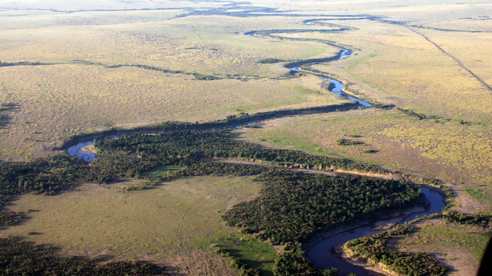
Prepared for the Mara Ecosystem Investors Association
Eighteen years of measurement in one river, and what we are trying to build next.
Scroll
Since 2008
Amanda and I have been working this river together since 2008. Almost nothing on this page was done by the two of us alone.
Eighteen years in the same place. Two Kenyan staff, a lab tent, two Land Rovers. Run by Soiyou Adventures, whose staff manage the camp and the field operations.
Current NACOSTI permits under a ten-year research agreement, with prior informed consent in place. Specimens are deposited at the National Museums of Kenya.
Amanda's lab works on the food web and the migration. Mine works on biogeochemistry and microbiomes. Most of the papers behind this page carry both names.
Eighteen years, none of it done alone
National Museums of Kenya · Maasai Mara University · University of Eldoret · The Mara Conservancy · Mara River Water Resource Users Association · Water Resources Authority · Narok and Transmara counties · NACOSTI · Soiyou Adventures
Cary Institute of Ecosystem Studies · Yale University · Michigan State University · University of Antwerp · IHE Delft · University of Groningen · British Geological Survey · Maynooth University
US National Science Foundation · JRS Biodiversity Foundation · WWF Kenya, Tanzania and UK
The research licence is Kenyan, the specimens are lodged at the National Museums of Kenya, and the occurrence records are published openly.
The collaboration in practice
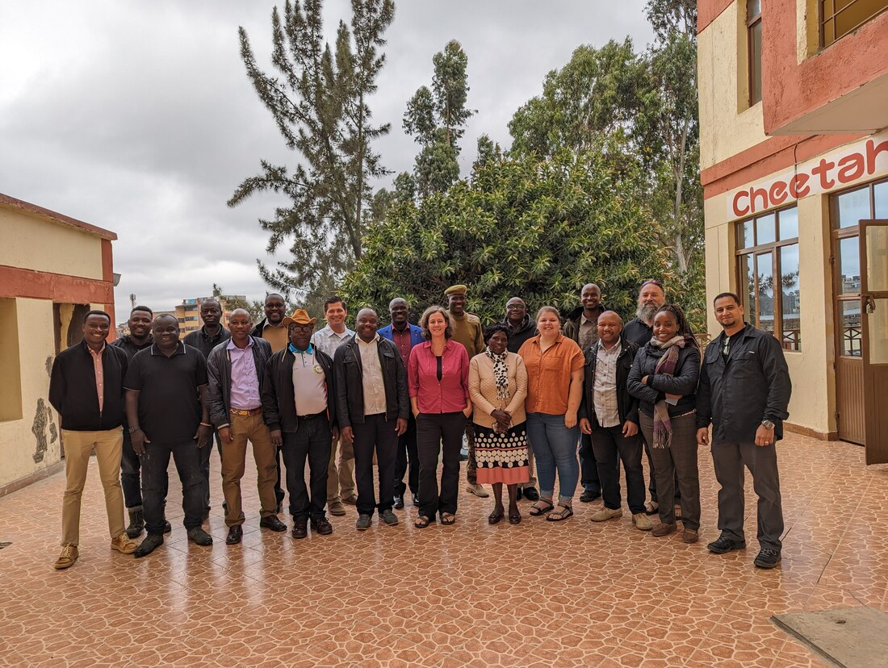
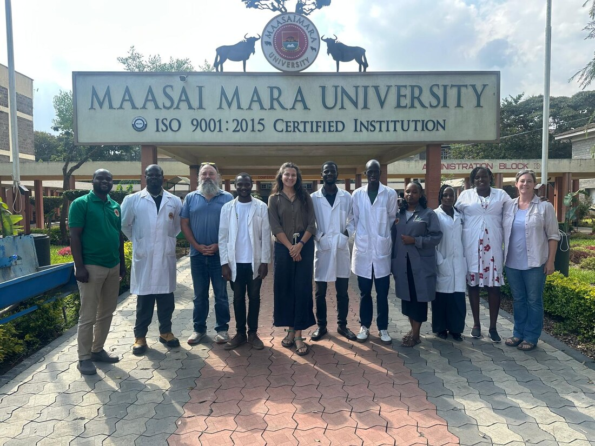
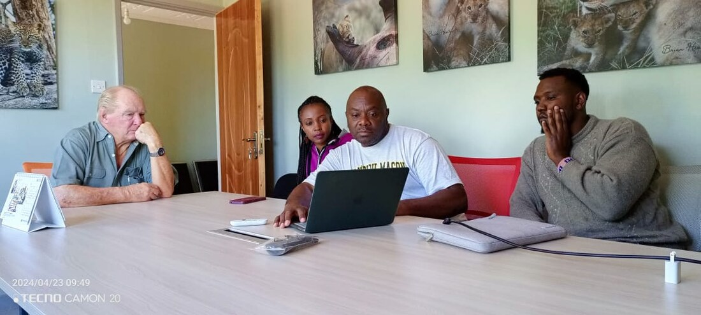
Photographs from the Dutton and Subalusky labs
The collaboration in practice
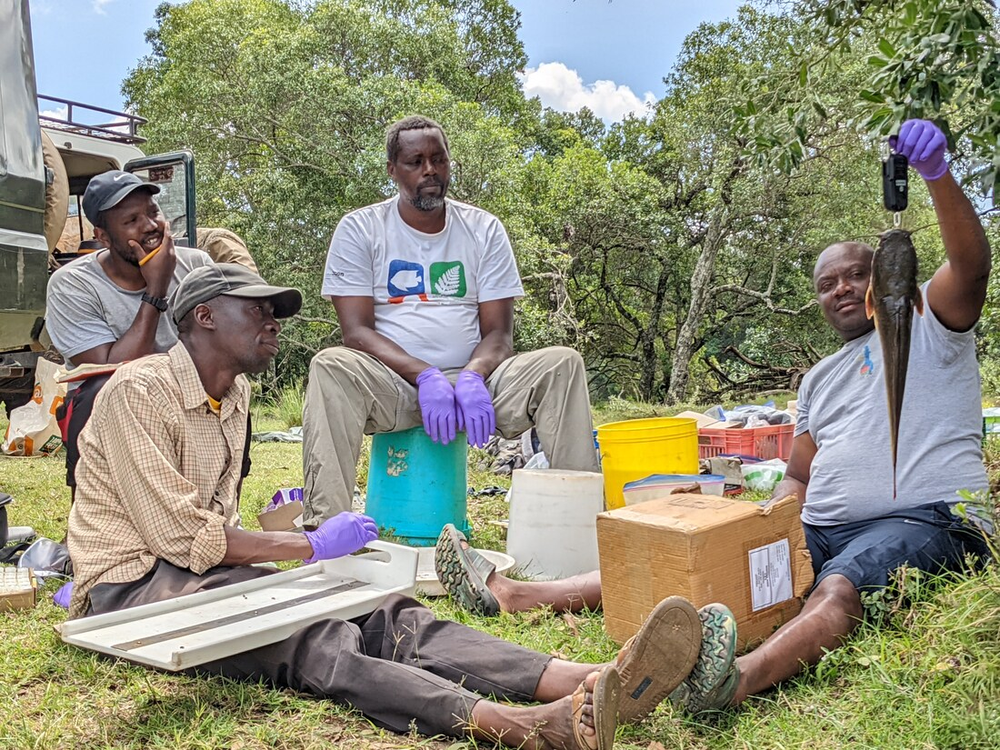
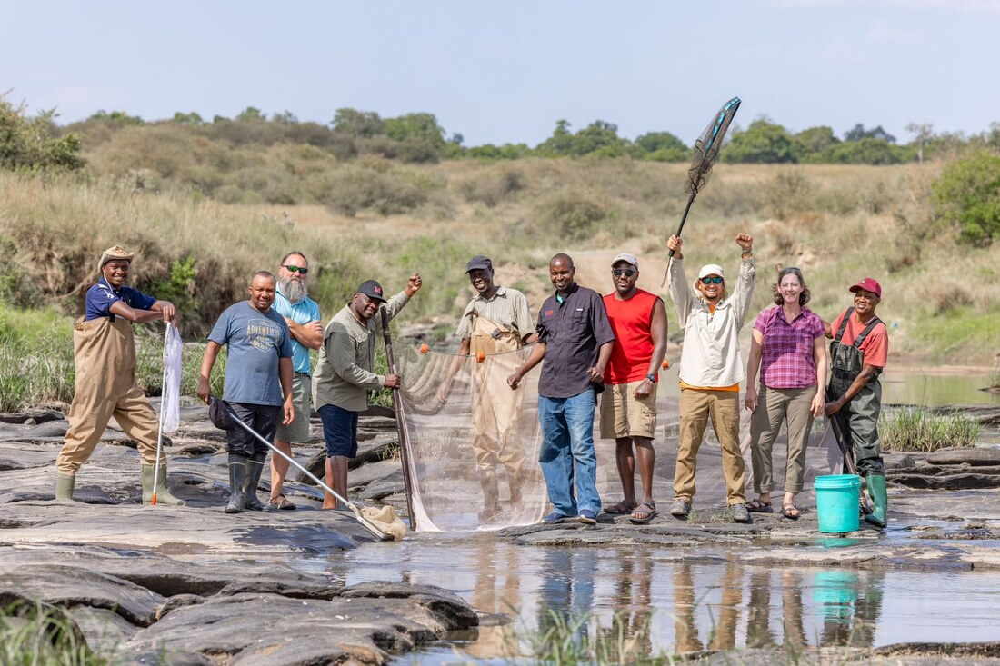
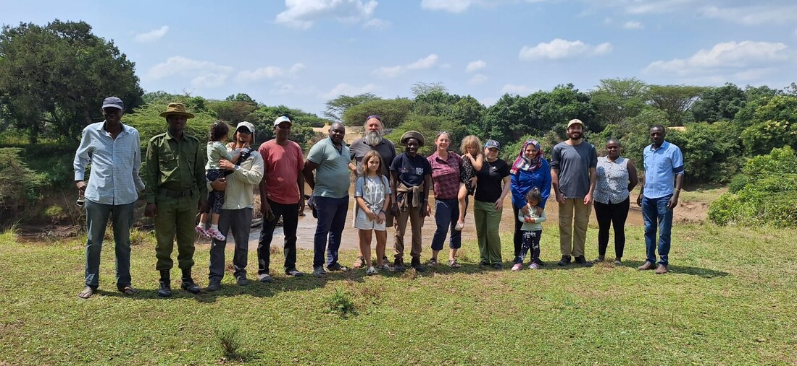
Photographs from the Dutton and Subalusky labs
The Mara rises at about 2,900 m in the Mau Forest and reaches Lake Victoria at 1,130 m, across a basin of roughly 13,500 km².
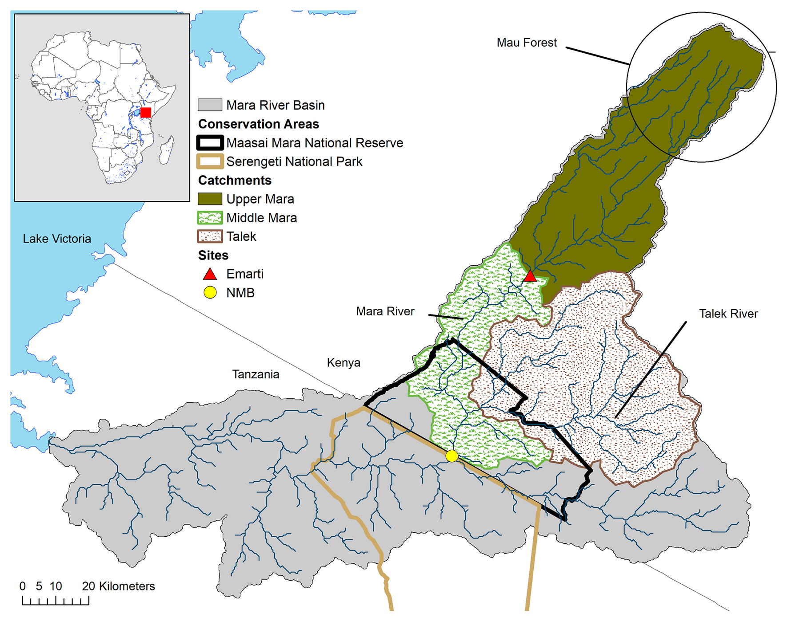
1.1 m
people in the basin; over 60% rely on the river directly for domestic water
1.3 m
wildebeest on the migration route that crosses it
4,000+
hippos in the Kenyan reaches, at 36 per river kilometre the largest single population on the continent
Map: Dutton et al. 2018, PLOS ONE 13:e0192828, Fig 1. Basin area and population: Dutton et al. 2019, Science of the Total Environment 664:148–160. Hippo density: Schoelynck et al. 2019, Science Advances 5:eaav0395.
The camp was established in 2008. These threads run in parallel; the page follows them one at a time.
| Years in the field | What we were measuring | Where |
|---|---|---|
| 2007–2012 | Environmental flows: hydraulics, fish, invertebrates | Six sites, Kenya and Tanzania |
| 2009–2015 | Fish kills; continuous oxygen record from Dec 2012 | New Mara Bridge |
| 2010–2013 | Scavenger camera traps and vulture telemetry | Two crossing sites |
| 2011 | Sediment fingerprinting; first gauged discharge | Emarti, Talek, New Mara Bridge |
| 2011–2014 | Continuous stage and turbidity record | Emarti and New Mara Bridge |
| 2011–2018 | Mass drowning surveys; carcass and bone experiments | Twelve crossing sites |
| 2012 | Hippo loading model and captive mass balance | Mara and Talek; Milwaukee County Zoo |
| Feb 2014 | Silicon mass balance | Ten mainstem sites and one hippo pool |
| 2014–2017 | Seventeen hippo pools; the Hippo Subsidy Index | Mara, Talek, Olare Orok, Ntiakntiak |
| Aug 2015 | Sediment cores covering 2,000 years | Mara Wetland, Tanzania |
| Jul 2016–Oct 2017 | Microbiome surveys and the meta-gut experiment | Twenty pools, then four in detail |
| 2023–2026 | Fish telemetry and basin biodiversity survey | Mara River, Kenya |
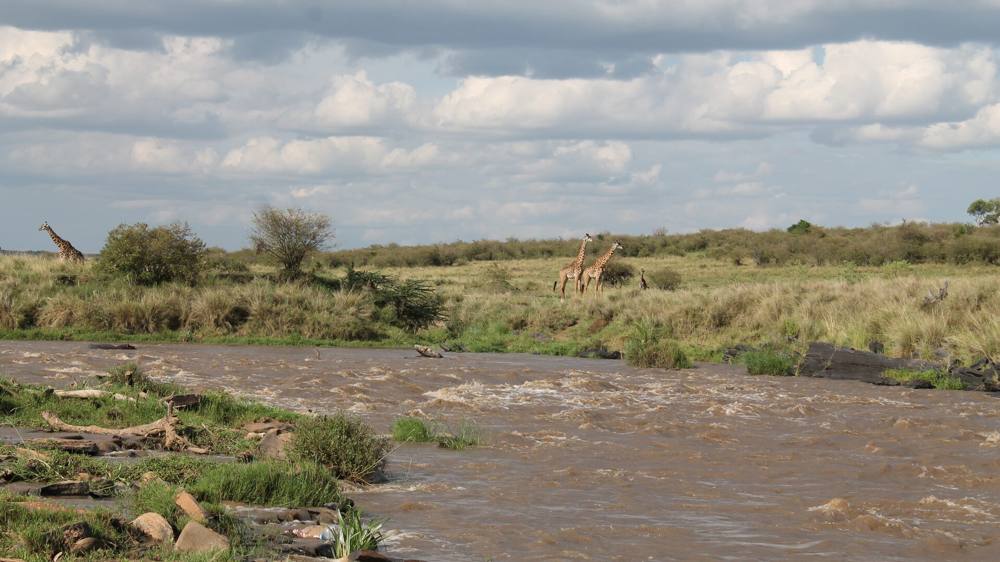
Part one · 2011 to 2015
Where the river's sediment actually comes from, and when that changed.
Fieldwork 2011
We built chemical fingerprints for each sub-catchment from the elemental composition of its soils, then matched the suspended sediment arriving at the Kenya–Tanzania border back to those sources.
51%
from the Talek, which carried only 7% of the flow
34%
from the Upper Mara and the Mau Forest
5%
hippo dung, the first time anyone had fingerprinted wildlife waste as a source of river sediment
Dutton, Anisfeld & Ernstberger 2013, Journal of Soils and Sediments 13:1708–1723. These shares are for three months of 2011 at New Mara Bridge; the wetland cores below integrate decades and give the Talek a smaller long-term share.
Fieldwork 2011 to 2014
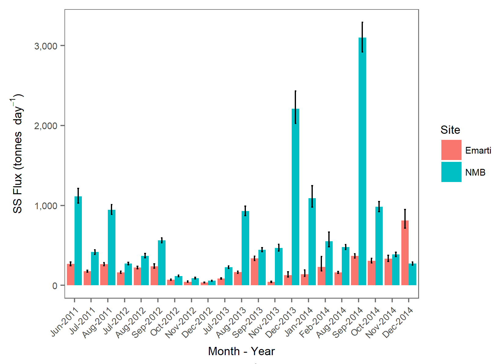
220
tonnes of sediment per day leaving the forested Upper Mara at Emarti
710
tonnes per day at the border, 126 km downstream
3.5×
flashier at the border than upstream, and rising every year of the record
Dutton et al. 2018, PLOS ONE 13:e0192828, Fig 7.
Two-thirds of the river's sediment comes from the flat, semi-arid, heavily grazed country below the forest.
That is contrary to the accepted view that deforestation in the Mau is responsible for most of the load. The Upper Mara is half the size of the Middle Mara and Talek catchment and receives twice the rainfall, yet the two yield sediment at the same rate per square kilometre.
Cores taken August 2015
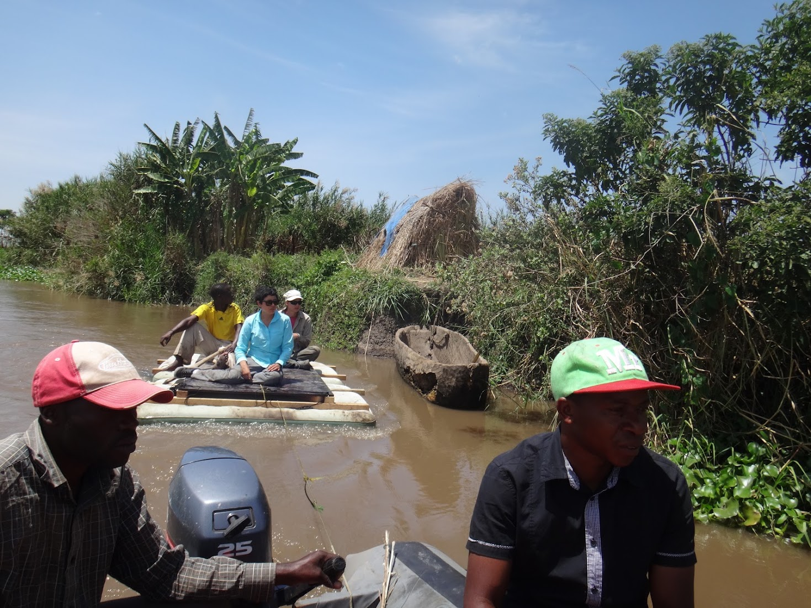
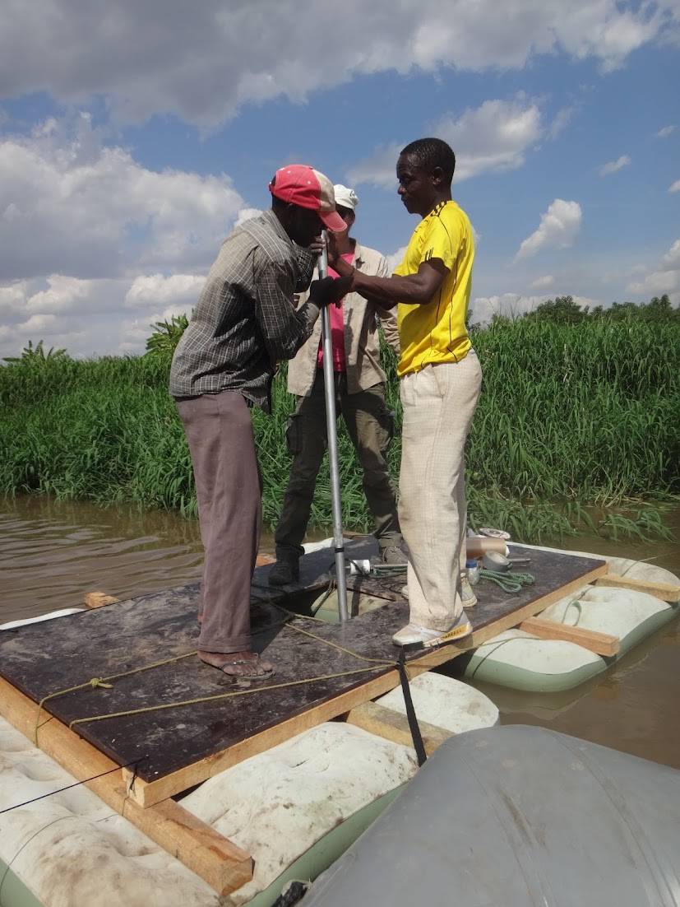
Mara Wetland, Tanzania
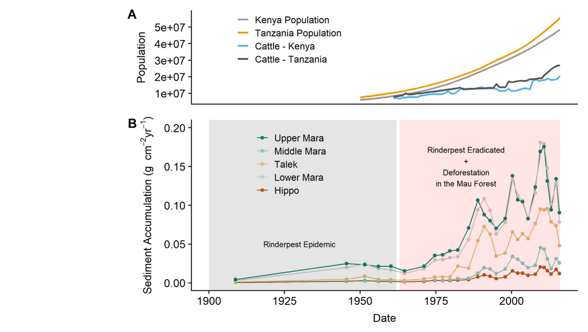
Cores from the Mara Wetland in Tanzania, dated with lead-210 and radiocarbon, hold the whole basin's history.
The Talek's share doubled, from under 10% of the wetland's sediment in the 1970s to about 20% in recent years.
Mercury reached 2.5 times its historic background in the 1960s, then fell after 1984.
Nitrogen isotopes shifted from the 1960s, the signature of added human and agricultural nitrogen.
Dutton et al. 2019, Science of the Total Environment 664:148–160, Fig 7.
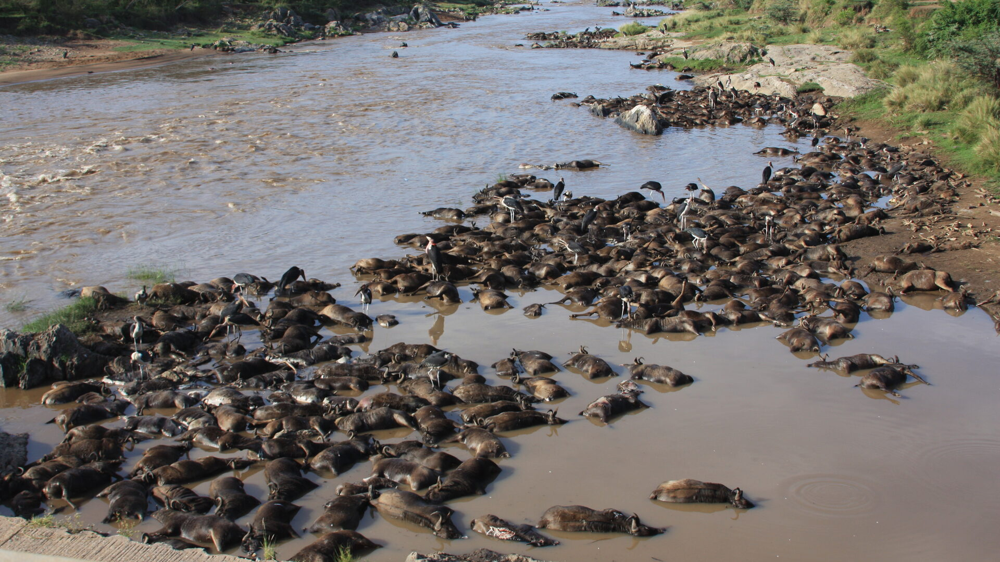
Part two · 2010 to 2018
For the weeks the carcasses are in the water, they deliver more nitrogen per day than all four thousand hippos combined.
Field surveys 2011 to 2015
Mass drownings of more than 100 animals happened in at least 13 of 15 years. We counted them, weighed carcasses, ran decomposition experiments and traced the nutrients into fish.
6,250
carcasses a year, on average, about 0.5% of the herd
1,096 t
of biomass a year, carrying 107 t carbon, 25 t nitrogen, 13 t phosphorus
34–50%
of what fish were eating, while carcasses were in the river
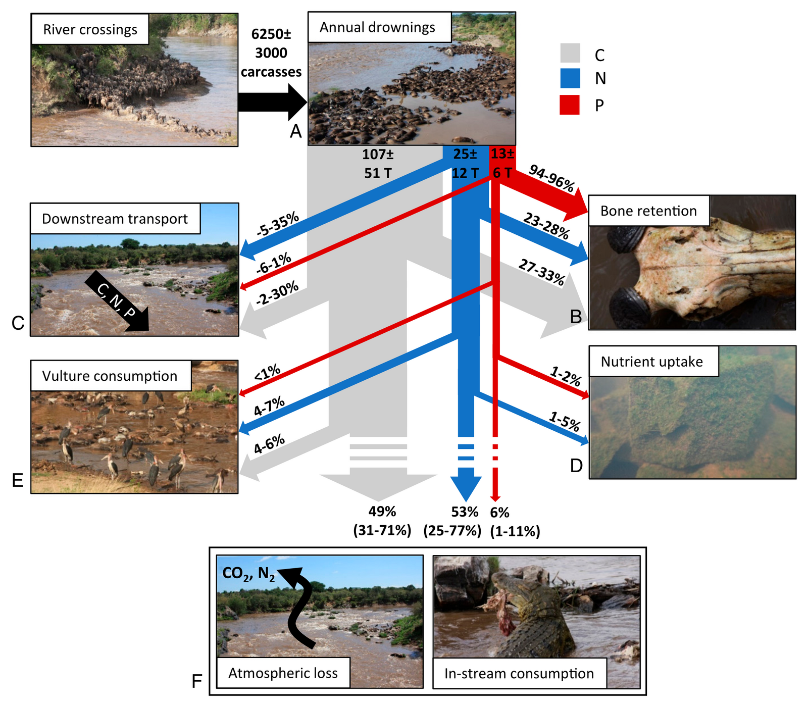
Subalusky, Dutton, Rosi & Post 2017, PNAS 114:7647–7652, Fig 3.
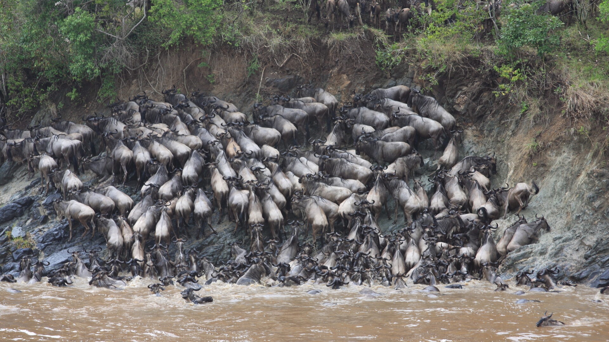
Every year the migration puts about ten blue whales' worth of carcass into a river that averages 12.5 cubic metres per second.
Per metre of channel that is nearly four times the mean spawning biomass of Pacific salmon runs in British Columbia. Mass drownings were probably common in rivers worldwide; they have declined as the great migrations were lost and people settled the banks.
Subalusky, Dutton, Rosi & Post 2017, PNAS 114:7647–7652 · Photo: Chris Dutton
Experiments 2012 to 2018
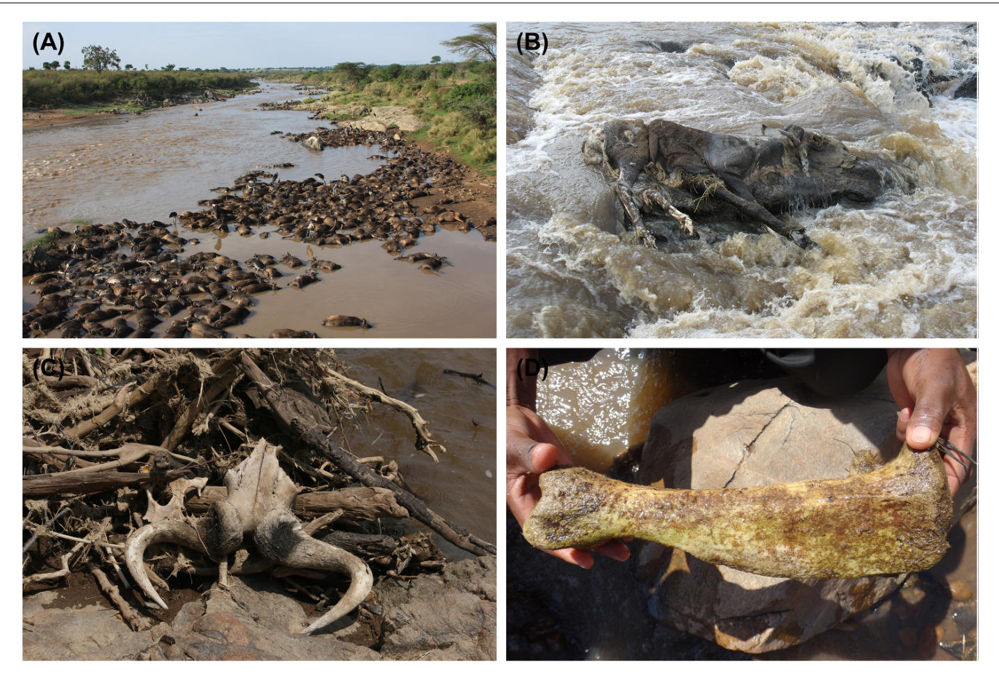
95%
of a carcass's phosphorus is locked in the skeleton
80+ yr
for the recalcitrant fraction of a bone to break down; the labile part goes in about four months
5,100 t
of wildebeest bone standing in the channel at any moment, feeding biofilm that supplies about a quarter of fish tissue
Subalusky et al. 2020, Frontiers in Ecology and Evolution 8:31, Fig 2.
Camera traps and vulture telemetry, 2010 to 2013
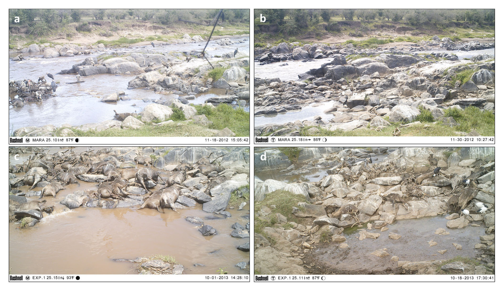
1.6 : 1
vultures per carcass at a mass drowning, against 105 : 1 for a single carcass on land
30–34%
marabou storks, which are only 2–4% of birds at a land carcass
6–9%
of the soft-tissue carbon, nitrogen and phosphorus removed by birds; the rest stays in the river
Handler et al. 2021, Ecosphere 12:e03326, Fig 2. Scavenger nutrient removal: Subalusky et al. 2017, PNAS 114:7647–7652, Fig 2E.
Camera trap, 27 October 2012
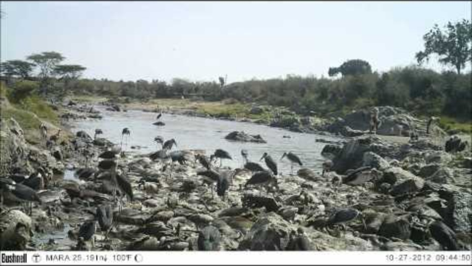
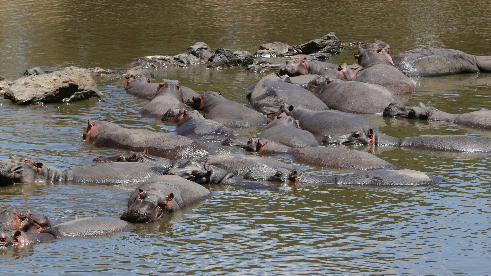
Part three · 2012 to 2017
Four thousand animals, a hundred and seventy pools, and a river that goes anoxic without any pollution at all.
Loading model, fieldwork 2012
Hippos graze on land at night and return to the water by day. An average animal puts about 8.7 kg of wet dung into the river every day. Across the population that is 36,200 kg a day, or 8,563 kg of dry matter.
670%
of the coarse organic matter the entire upstream catchment delivers
27–29%
of the nitrogen and phosphorus load, from one species
260–1,563
hectares of grassland production moved into the river each year
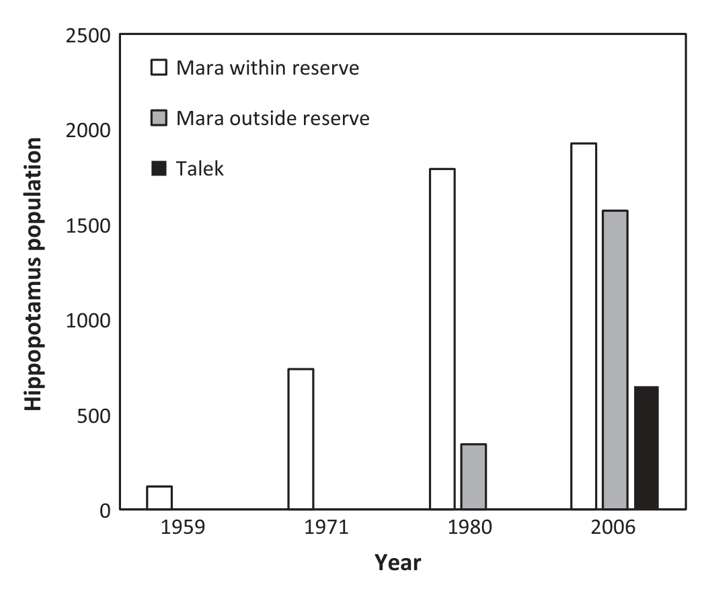
Subalusky, Dutton, Rosi-Marshall & Post 2015, Freshwater Biology 60:512–525, Fig 2.
The captive trial behind the loading model
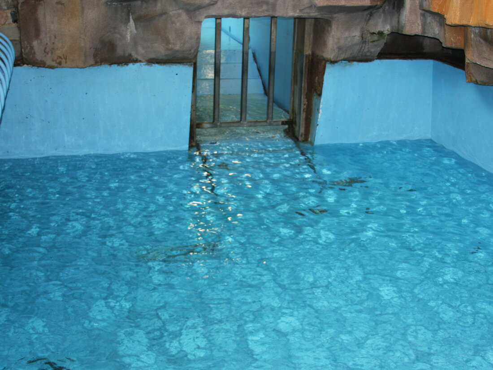
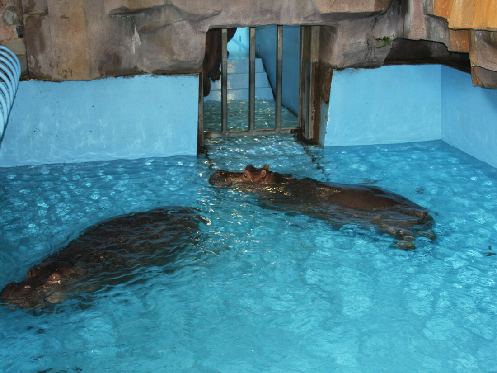
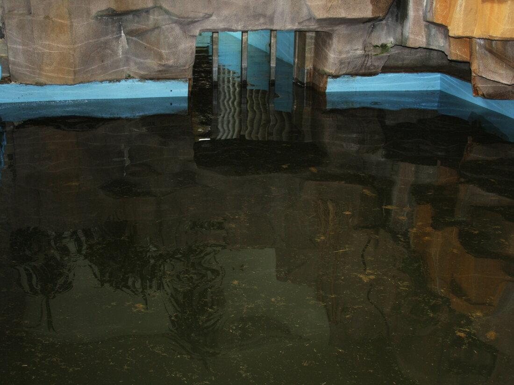
To put a number on what one animal delivers, we ran a mass balance in a captive pool: drain it through a sieve, weigh everything that came out, refill, let the animals in, and measure the water again a day later. That is where the 8.7 kg per hippo per day comes from.
Captive feeding trial reported in Subalusky, Dutton, Rosi-Marshall & Post 2015, Freshwater Biology 60:512–525.
Continuous record, December 2012 to February 2015
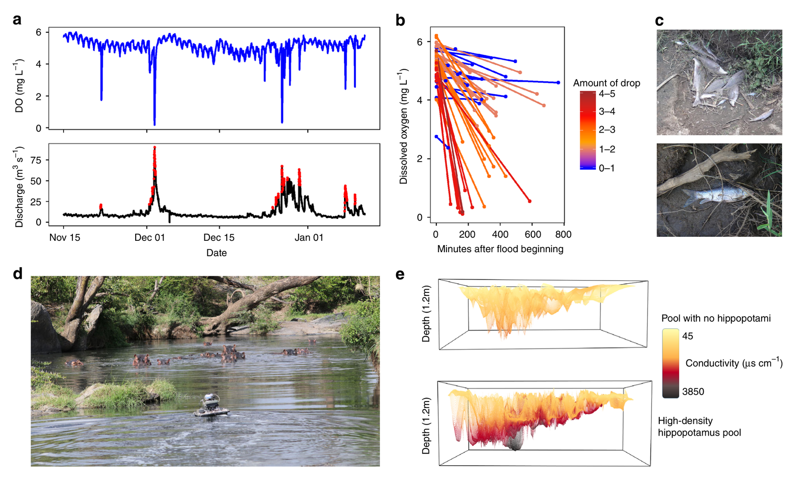
49
flushing flows dropped the river's oxygen in three years
13
of those drove it below 2 mg per litre
9
fish kills documented over five years
0.34
mg per litre, the low point on 10 December 2013, held under 1 for 210 minutes
Dutton et al. 2018, Nature Communications 9:1951, Fig 1.
Seventeen pools surveyed, 2014 to 2017
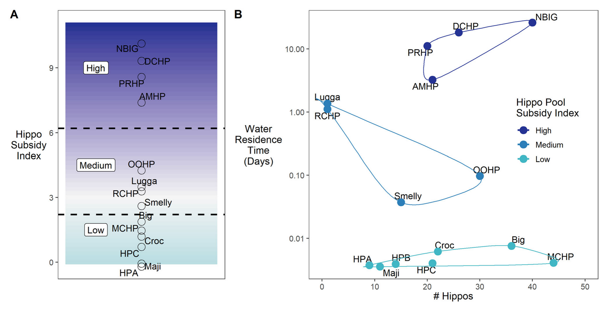
The index. Hippo number multiplied by water residence time. It predicts nitrogen, phosphorus, carbon, oxygen demand and both greenhouse gases.
Hippo number alone. Predicted none of them. A pool with forty hippos and fast throughflow stays clean; one with twenty and slow water does not.
Two states. Pools sit in one of two conditions, oxic or anoxic. Three of the four high-index pools crossed over within two weeks of a flush.
Dutton et al. 2021, Ecosystems 24:284–300, Fig 2.
Bottom water in high-subsidy pools, August to September 2017
Total ammonia nitrogen above 13 mg N per litre, past the level known to impair aquatic organisms.
Oxygen demand in the range of untreated domestic sewage, though orders of magnitude below a livestock waste lagoon.
Methane among the highest ever reported for any open water body, about 435 micromoles per litre, against 37 for the highest previously recorded ponds.
Each flushing flow resets the pool. Between flows it slides back toward anoxia.
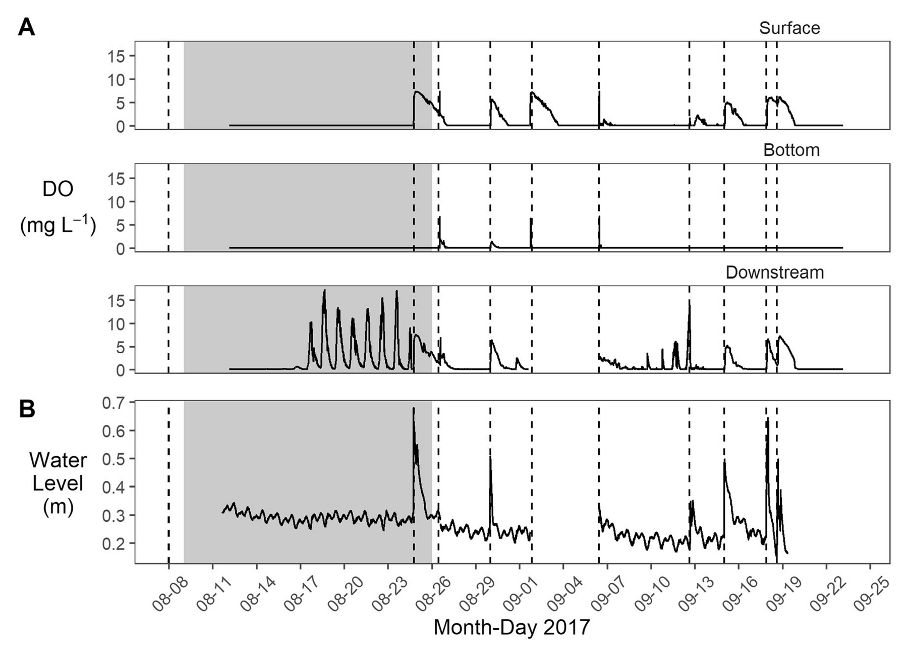
Dutton et al. 2021, Ecosystems 24:284–300, Fig 4.
The management conclusion
“To maintain good water quality in river systems with hippos, maintaining the natural flow regime, for example, by minimizing hydrologic alterations by storage dams and excessive water abstraction, should be considered more important than regulating the size of the hippo population.”
Dutton, Subalusky, Hamilton, Bayer, Njoroge, Rosi & Post 2021, Ecosystems 24:284–300.
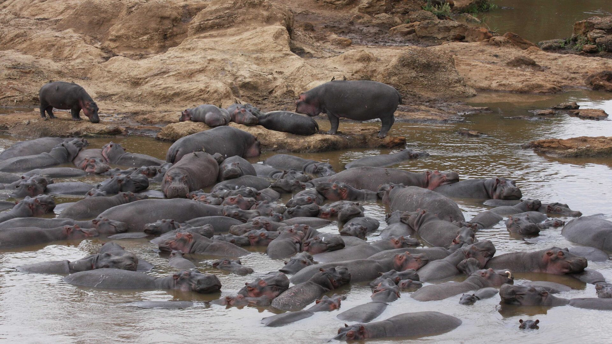
Part four · 2016 to 2017
Hippos do not only load carbon and nutrients. They load a working microbial community that keeps functioning outside the animal.
Sequencing surveys July 2016 and August to October 2017
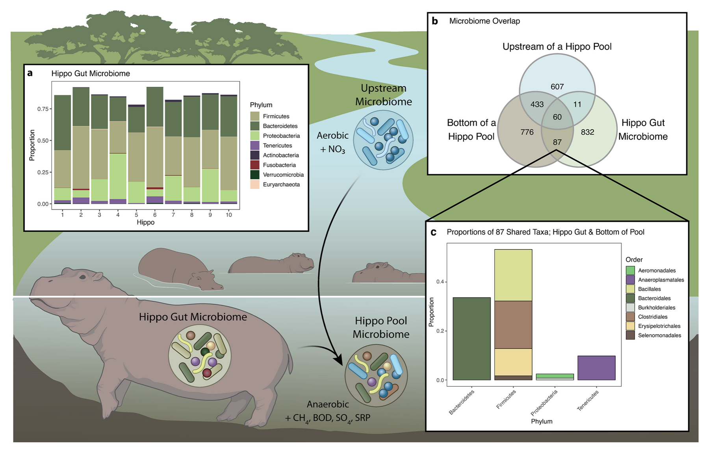
87
actively functioning microbial taxa shared between the hippo gut and the pool bottom, and absent immediately upstream
30%
of the pool's active microbial community derived from hippo dung, just before a flushing event
RNA
not DNA, so these are organisms alive and working, not dead cells washed in with the dung
Dutton et al. 2021, Scientific Reports 11:23117, Fig 1.
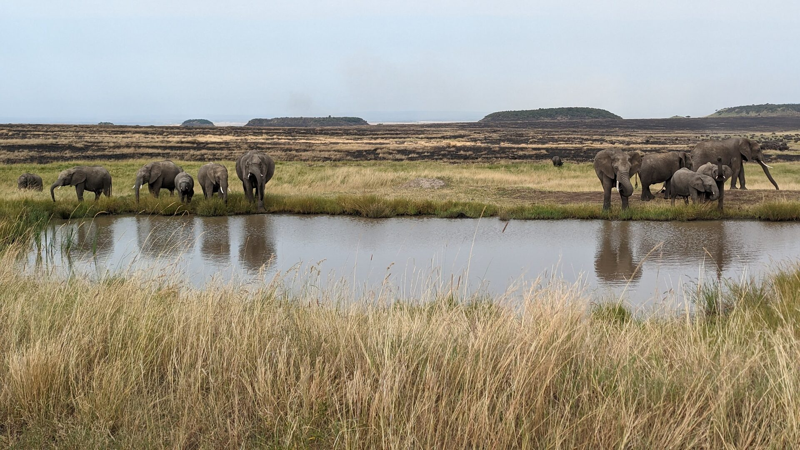
Part five · running alongside, in the same years
Silicon and Lake Victoria; cattle against hippos; and environmental flows against the dams.
Dry season campaign, February 2014
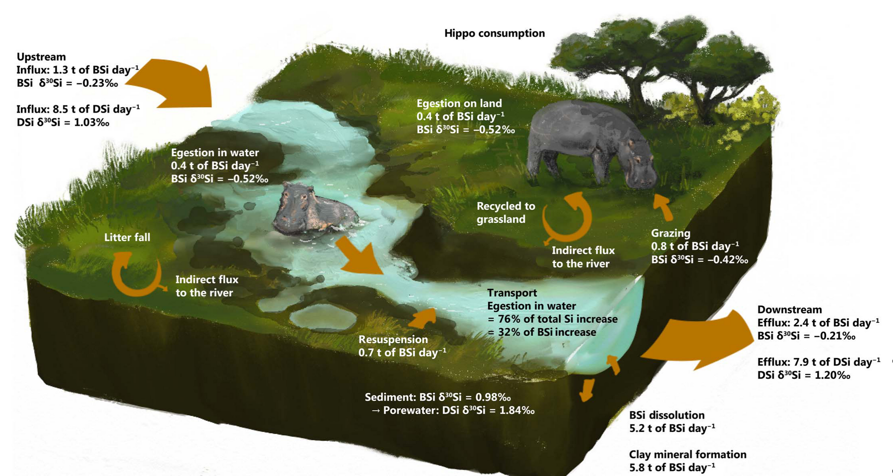
0.4 t
of silicon a day carried from grassland into the river as dung
76%
of the river's silicon flux is affected by hippos, at most
17×
faster dissolution of silica from hippo dung than from undigested grass
5%
of Lake Victoria's inflow is the Mara, and silicon is what its diatoms are built from
Schoelynck et al. 2019, Science Advances 5:eaav0395, Fig 1.
Mesocosm experiment with Frank Masese, Eldoret
Hippo dung and cattle dung are not interchangeable inputs. They differ in quality, in where they enter the channel, and in what they do to the water once there.
6%
of organic matter loading from cattle inside the reserve
57%
from cattle along the Talek, outside it
250,000
cattle grazing the communal lands adjoining the reserve
2×
cattle numbers in the basin more than double in the dry season
Masese et al. 2020, Proceedings of the Royal Society B 287:20193000.
Environmental flow assessment, field seasons 2007 to 2012
High flows water the riparian terraces. Low flows expose the sandbars that become habitat when water rises. Freshes clean the pools. Rising flows cue fish to spawn.
The Amala and Nyangores are 13% of the catchment above Mara Mines but supply between 14% and 75% of mainstem low flows, and most of what arrives between July and October.
Two on the Mau headwaters, one below Serengeti. The Reserve Flow is proposed at Q95, which is a drought flow. Attenuating peak flows would remove the flushing that keeps hippo pools liveable.
McClain, Subalusky et al. 2014, Hydrological Sciences Journal 59:801–819.
Where the pressure actually falls
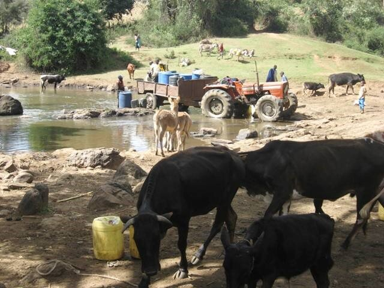
As of 2005, water use across the basin was under 2% of annual runoff. The pressure is concentrated in the dry season, in the middle reaches, where the lodges, the livestock and the wildlife draw on the same water at the same time of year.
Basin water use estimate: McClain, Subalusky et al. 2014, Hydrological Sciences Journal 59:801–819.
Standing now, in the basin
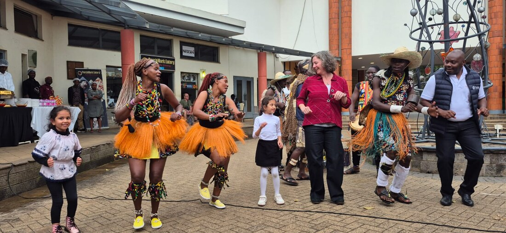
46
fish carrying radio tags, producing 1.9 million detections
49,380
invertebrate specimens digitised, 28,000 of them open on GBIF
250+
Kenyan and Tanzanian scientists and students trained
70,000
visitors in three months to the Mara River exhibit in Nairobi
Figures: JRS Biodiversity Foundation report, July 2026.
Nairobi, March 2026
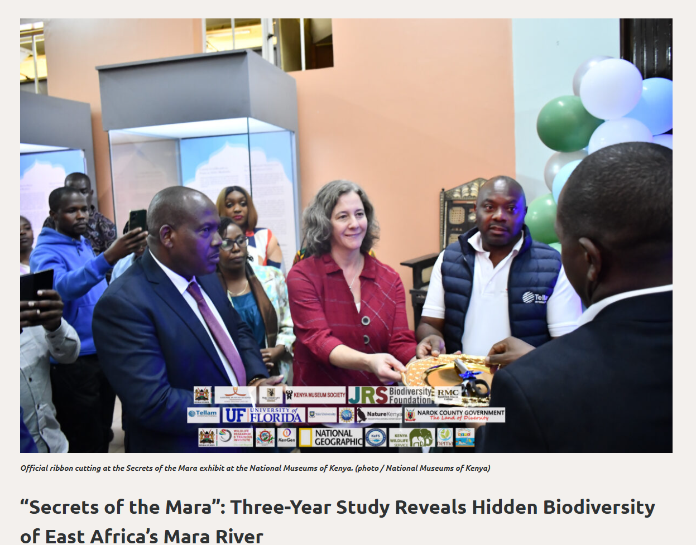
Where this work has been told
National Geographic
How 2 million pounds of rotting flesh helps the Serengeti
Smithsonian Magazine
The Mara relies on hippo dung to move a key nutrient
NBC News
The crocodile-shaped airboat that samples hippo pools
Mongabay
Scientists solve a fish massacre in the Mara River
Science News
Hippo dung cycles silicon through East Africa
Popular Science
The world secretly runs on hippo dung
Live Science
Hippo dung is literally suffocating fish
CBC Quirks & Quarks
Flushing hippo pools smother fish in African rivers
JSTOR Daily
Hippo dung kills fish, but there is an upside
Chemical & Engineering News
Wildebeest woes: what the drownings feed
Futurity
Hippo pools become their meta-gut
Science
Hippos create community guts in African ponds
The meta-gut framework is taught in Slonczewski, Foster and Zinser, Microbiology: An Evolving Science (W. W. Norton). A Mara hippo pool is now a textbook case.
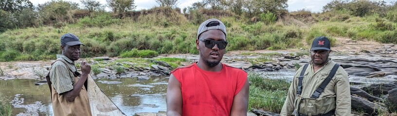
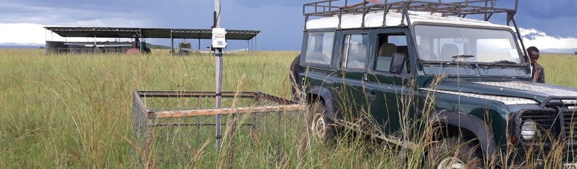
Acoustic and radio receivers along the mainstem, showing where fish go during floods and oxygen crashes. Proposed to the Disney Conservation Fund.
River stage, rainfall and water quality sensors hosted at lodges and communities, reporting in real time. The monitoring backbone of Mara WISE.
A locally governed fund modelled on the Upper Tana–Nairobi Water Fund, led by Maasai Mara University with Narok County and the Water Resources Authority.
Also in the pipeline: NASA Earth observation, a Moore Foundation project on gut symbionts, and a Templeton grant.
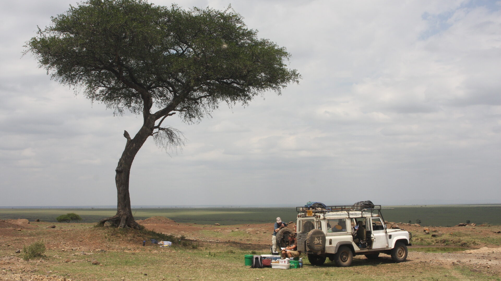
The measurement itself
Everything on this page was measured from one camp.
Eighteen years in the same place, two Kenyan staff, a lab tent and two Land Rovers. The record is continuous because the camp is permanent. A station that stops for a season leaves a gap in the record that cannot be filled afterwards, which is what makes an eighteen-year baseline rare and what the figures below are keeping in place.
Approximate, US dollars, at the scale we run them
It is simpler to say what each piece costs than to make a general appeal. The numbers are smaller than people usually assume, and every line here is fundable on its own.
| What it is | Cost | What it does |
|---|---|---|
| A flood sensor | $300 | Built in our lab. River stage, live. Hours of warning downstream. |
| A TAHMO weather station | $3,000 | Rainfall, temperature, wind and humidity, into the TAHMO network. |
| A student field season | $8,000 | How most of the work on this page actually got done. |
| A water quality station | $10,000 | Oxygen, turbidity and conductivity, continuously. Plus upkeep. |
| The field camp, one year | $15,000 | Two staff, the vehicles, and every sensor on this list maintained. |
Two of the things we need are not money at all: somewhere on your properties to mount a station, and a seat for MEIA at the table as the Mara Water Stewardship Fund is designed.
Thank you
The Mara is a working baseline for what a river with its wildlife intact actually does, and the reference against which rivers that lost theirs are now compared. Keeping the measurement running is the part we would like your help with.
Christopher Dutton
duttonc@ufl.edu
Amanda Subalusky
asubalusky@ufl.edu
Department of Biology
University of Florida